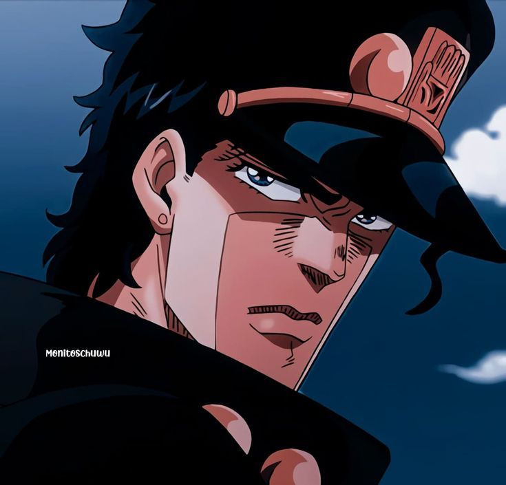

Sinopse
A história se passa nos anos 1980 e acompanha Jotaro Kujo, bisneto de Joseph Joestar, que descobre possuir um poder sobrenatural chamado Stand, uma manifestação física de sua energia espiritual. Quando Dio Brando retorna, agora usando o corpo de Jonathan Joestar, a família Joestar é novamente ameaçada, colocando em risco a vida de Holly Kujo, mãe de Jotaro. Para salvá-la, Jotaro embarca em uma longa jornada ao lado de Joseph Joestar, Avdol, Kakyoin e Polnareff, viajando do Japão até o Egito. Durante o caminho, o grupo enfrenta diversos inimigos enviados por Dio, cada um com um Stand único e batalhas cheias de estratégia e tensão. A Parte 3 marca a introdução definitiva dos Stands como principal sistema de poder da série e se destaca pela estrutura de viagem, confrontos memoráveis e pelo embate final entre Jotaro e Dio, consolidando um dos conflitos mais icônicos de JoJo’s Bizarre Adventure.
Personagem principais
| Imagem | Nome |
|---|---|
|  | Jotaro kujo |
 |
dio brando |